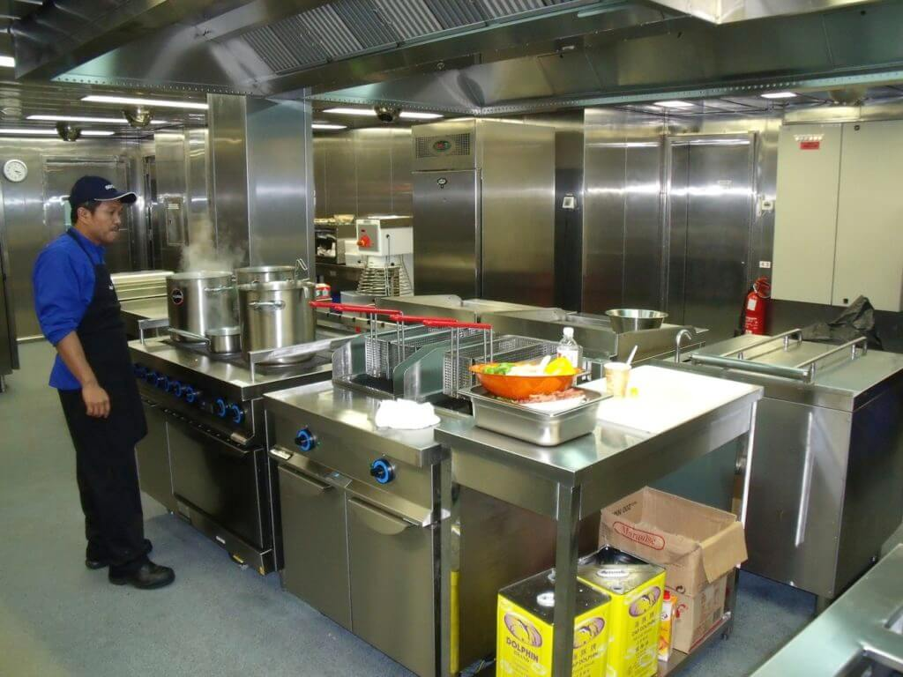

Specialized Service of SeaSupplyService
In the realm of culinary arts, where taste buds reign supreme and creativity knows no bounds, SeaSupplyService Catering stands as a beacon of excellence.

Kitchen and Galley Management by SeaSupplyService
Ahoy, fellow seafarers! Today, we're embarking on a journey through the choppy waters of galley management, guided by the steadfast beacon of SeaSupplyService.

Supply Chain Management of seasupplyservice
Embarking on a maritime journey involves more than just navigating the waves; it requires meticulous planning to ensure that every aspect of onboard operations runs smoothly